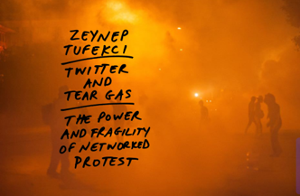
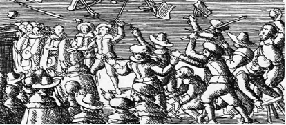
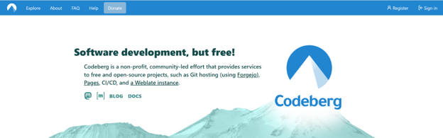
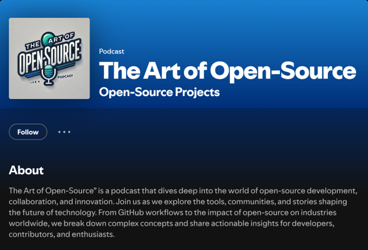
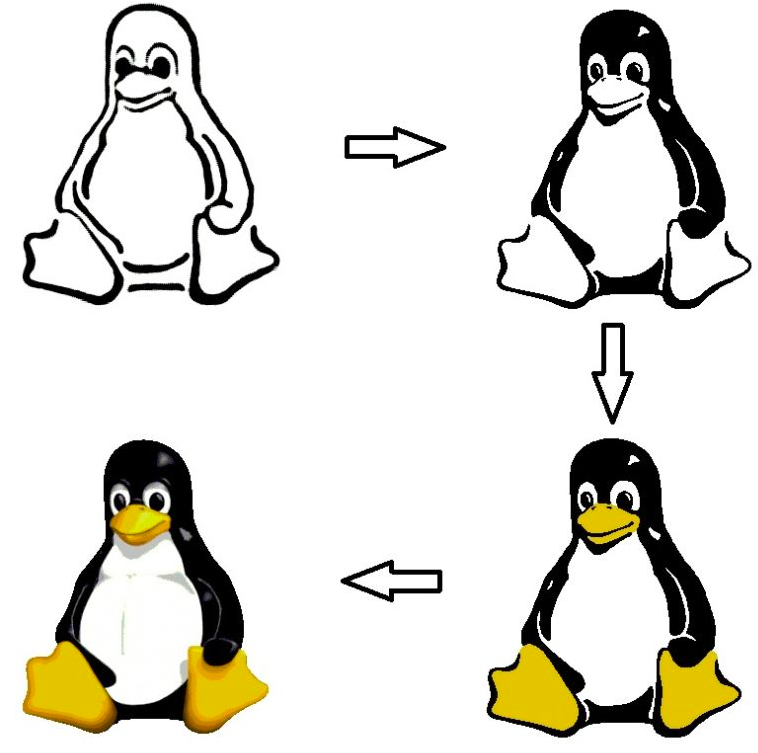
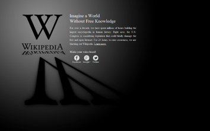
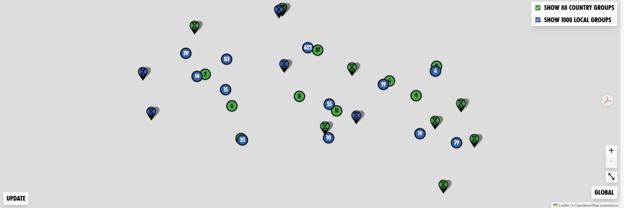
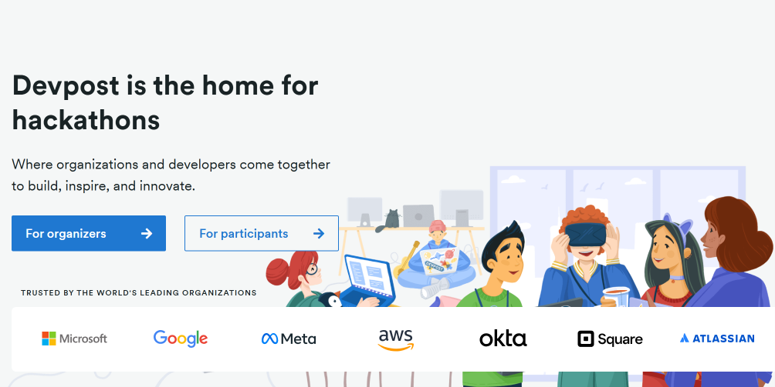

In 1983, Richard Stallman launched the GNU Project on a simple premise: software users deserve the freedom to run, study, share, and modify the code that runs their lives. By 1998, that moral language had been rebranded as "open source" — a strategic softening designed to make the movement palatable to corporations. The rebrand worked.
But today, that same gap is being exploited again. AI companies train models on open-source code at scale, extracting value while limiting contributions back to the commons.
Recompile is an activist toolkit for a Free and Open-Source Software (FOSS) revival movement: a set of ten practical tools, theoretical anchors, and a living manifesto for renewing free software's original ideals in the age of AI and cloud enclosure.
Ten tools for a FOSS revival movement. Click any tool to expand, or use the buttons to open all at once.
Software was meant to be shared, and shared back. That promise built the commons we all stand on now.
But the ground has shifted. Capital learned to extract from the commons without reciprocation– not by stealing code outright, but by running it, training on it, profiting from it while the old rules of distribution stayed silent. Both "free" and "open" assumed a world where sharing and reciprocity moved together, but the structures of the world have changed.
We hold one principle non-negotiable: reciprocity. Not nostalgia for old licenses, not purity over pragmatism, but the insistence that whoever takes from the commons gives back, at every layer: code, execution, and training.
We do not pretend to have solved this. We are not idealists; we are strategists committed to an ideal.
This document is unfinished by design. Ideate and amend.

Relevance: Technology is not a neutral tool; Tufekci’s Twitter and Tear Gas describes technology as both a tool for movements and a landscape that can use revolutionaries as well. This is especially relevant to FOSS, where technological advancement and networks can encourage speed and visibility, but revolutionaries risk forgetting that tools (including this toolkit’s) are only useful as long as they serve a shared human vision. Planned obsolescence, whether explicit in software expiration while hardware remains usable or in the design of modern items that break easily, replicates the concept of technology as a tool for or against the public depending on who controls its structure. Rejecting planned obsolescence reflects a refusal to be used by a tool, offering an offline parallel that is nevertheless spurred on and made possible by networks.
Mechanism: A recurring, open in-person gathering workshop that invites the general public to bring in their broken or planned obsolescent objects. People bring broken items like bikes, clothes that need mending, devices that are becoming obsolete, etc., depending on the volunteers’ capabilities in that gathering, and the volunteers help event-goers learn to repair their objects.

Relevance: The enclosure of England's commons offers the deepest precedent for what is happening to the digital commons now. For centuries, open fields and common pastures sustained smallholders through shared management: negotiated, rule-bound cooperation like manor courts, stints, and communal rotations. Enclosure occurred because powerful actors found it profitable to fence what had been shared, often using "improvement" as cover, much like today's extraction profits large corporations. Giving activists a historical lineage counters the sense that digital enclosure is a novel, unprecedented, or inevitable process; it shows it has been fought before, that there has been a history of the same human vision, with documented strategies and outcomes, even if those are not equally applicable today.
Mechanism: A freely distributed digital site hosting readings on historical enclosure alongside relevant movements and theorists, offering inspiration and context. The site functions as a defensive place where the public can read about who writes history, who deems enclosure "inevitable," and what has been done about it. It serves to open history, and in doing so, perhaps inspire others.

Relevance: FOSS projects already depend heavily on a small number of corporate-owned platforms, GitHub being the obvious one, for hosting, discovery, and even identity within the community. This dependency became visible during the GitHub Copilot controversy, when many developers realized their code had been used for training without their consent, on the same platform they relied on to host that code. This tool exists because a movement built around the idea of software freedom shouldn't have its own critical infrastructure, glossary, archives, ongoing projects, sitting entirely on platforms it's simultaneously trying to hold accountable.
Mechanism: A single federated platform, something like Codeberg, Forgejo, or IPFS, hosting copies of critical FOSS repositories, historical and ideological sources, ongoing news covering licensing changes and lawsuits, and the open-source projects the movement itself produces. Individuals and groups handle their own repositories, and rotating contributors can keep individual repositories on news feed current, so no single person's absence breaks the whole thing.

Relevance: Most people who benefit from FOSS every day, through Android, through web infrastructure built on the LAMP stack, may not know it was connected to a movement with a history and an ongoing, even if fractured, argument. The shift from "free software" to "open source" was partly successful because it framed its goals as a development methodology rather than something with ethical stakes, and today’s cyclical concerns with big tech and AI have a past. A podcast and social media content aimed at a general audience, not just developers, is a way of reintroducing the idea that there's something vital to care about here that affects most people today.
Mechanism: Run a weekly podcast with short-form clips posted simultaneously to Spotify, YouTube, and Instagram, with a guest lineup that includes a variety of individuals or groups: open-source maintainers, legal scholars discussing cases, recurring debates between various advocates of aspects of the movement, and others that can provide anything from contemporary to scholarly insight. This podcast can also host guests from other modern movements that are aligned in similar ways. Even though these aren't open platforms themselves, the speed and reach they offer is necessary for more widespread understanding and the encouragement of discourse.

Relevance: FOSS has no shared face. Tux the penguin works for Linux, but the broader movement it has devolved into or rather, all the varying groups adjacent to it doesn't have an equivalent symbol or image that travels across projects, platforms, and public spaces the way a flag or logo does for other movements. This matters because decentralized movements without shared visual identity struggle to register as movements in public consciousness; they read as a collection of unrelated projects with overlapping complaints rather than a unified force with a common demand.
Mechanism: Rather than engineering a mascot, this tool builds the infrastructure for one to emerge organically. Each hackathon, reading group cohort, and policy campaign runs its own open design call for whatever artifact it needs, be it a zine cover, a campaign sticker, a patch, or more. All submissions live on the Living Library, version-controlled and freely forkable. If one image keeps getting reused and remixed without anyone deciding it should, perhaps that symbol has earned its place. Rather than forcing a shared visual identity, this tool creates the conditions under which identity can accumulate.

Relevance: FOSS components are everywhere in the software people use daily, but they’re almost entirely invisible until something breaks, which is part of why arguments about licensing or AI training data may feel abstract as they don’t necessarily impact day-to-day life. When a widely-used open-source library gets pulled or relicensed or if the software upon which technology is built goes down, the disruption is felt immediately by people who may not have cared about the dependency before. “Going Dark” uses that same dynamic deliberately, making the invisible dependency on FOSS visible through absence, which is a much more direct method of showing the public why they should care.
Mechanism: A public installation, posters, a billboard, or a takeover of a screen in a high-traffic space like a campus or public square, simulates familiar local tools failing one at a time, each with a short note explaining which open-source component broke and why. Provide a toolkit version or inspiration for this, templates, sample copy, and a list of commonly relied-upon open-source components, so chapters or allied groups elsewhere can adapt it to their own local services and run their own version on their own timeline.
Relevance: The shift from "free software" to "open source" is a textbook case of vocabulary erosion, where terms like "freedom" and "user rights" were absorbed in favor of language about efficiency and development practices, and most people who use the term "open source" may not have read the GPL or Stallman's original arguments for why the distinction mattered. Reading groups counter this by going back to primary sources directly, rather than letting the movement's vocabulary keep drifting through secondhand summaries, forcing individuals to wrestle with the terminology rather than outsourcing their thinking.
Mechanism: Bimonthly sessions organized digitally, meeting online or in-person, work through primary texts, original essays, legal filings, popular arguments, materials from various movements, or more. Sessions can be publicized online, even through proprietary software like Discord, or through word of mouth, existing all across the world and through different institutions to encourage discourse and the sharing of ideas to build individual consciousness. The regularity also builds the kind of relationships that allow for mentorship and community building since someone you've read alongside for months can more naturally become a mentor or mentee.

Relevance: Student organizations, regional meetups, foundations like EFF, OSI, FSF may operate without knowing what specifically others are doing and aiming for. However, leverage against enclosure depends on coordinated pressure across institutions, not parallel solo efforts. Meanwhile, licensing may be more specific to each institution or region, requiring policy chapters working towards specific institutions from the inside. Both a broad connective layer constantly reaching out to other groups and the support that such a web provides for each unique chapter are beneficial.
Mechanism: Advocacy Web is a connective layer that bridges various organizations, chapters, and groups that individually pursue whatever policies they can realistically reach, be it procurement preferences, AI-disclosure requirements, or more, using a shared template that can be adapted locally. A rotating group of representatives, drawn from each chapter and from allied movements working in parallel, meets periodically to share progress, discuss redundant efforts, and coordinate inter-chapter events. No single chapter permanently holds the coordinating role. Small everyday successes and wins can get logged to a shared directory, so others can be inspired by and adapt what worked. Adjacent organizations outside FOSS, such as in labor, privacy, and environmental commons movements, can also deliver insight because the enclosure problem is not singular.

Relevance: While it is a tricky balance to find, the creative ideation which risks being outsourced tolely to tools and the learning of skills in order to keep up and even subvert technology are both equally important in the current climate. The work that brought FOSS to life– the documentation, the adaptation, the community learning– unites developers and beginners worldwide and can be adapted to today’s climate. While single-day hackathons help in ideation, they also do not necessarily facilitate the deep thought process required in longer projects.
Mechanism: Project boards, which can be tied to a specific FOSS tool that activist or mutual-aid networks rely on, encrypted messaging, organizing software, or more typical hackathon projects, are tagged by time estimate and skill level. Periodically, the community also runs an in-person hackathon day/ week aimed especially at younger contributors, as the next generation of youth is a vital place to look for the future thinkers.
A growing reference bank.
A printable card summarising all ten tools. Download and distribute.